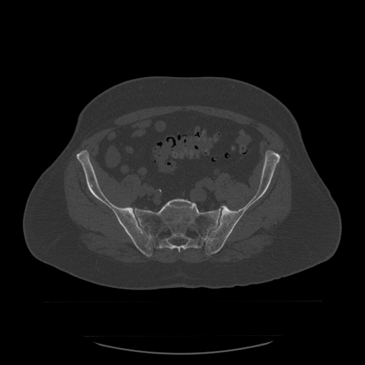
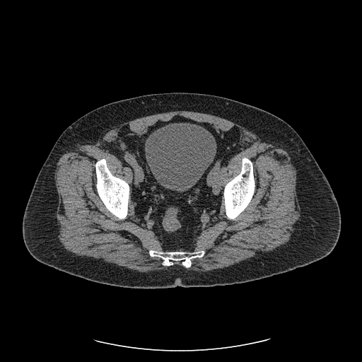
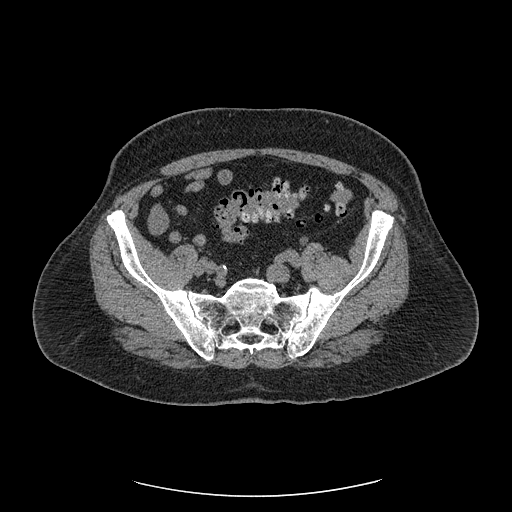

The bony pelvis is the reproducible scaffold for localization and matching. Each os coxae is three fused bones — ilium, ischium, pubis — meeting at the acetabulum.

The pubic symphysis, femoral heads, and sacral promontory make excellent bony references — but as the next pages show, for the prostate they only get you close.
The central pelvic organs stack in a consistent front-to-back order that is the key to reading any pelvic slice.


On axial pelvic CT, what is the front-to-back order of the central male pelvic organs?
Rotate this model to see how the kidneys, ureters, and bladder connect — the drainage pathway whose filling state drives day-to-day changes in pelvic anatomy.
Interactive urinary tract: kidneys → ureters → bladder. Drag to rotate, scroll to zoom.
3D model: "Urinary tract" by E-learning UMCG (sketchfab.com/eLearningUMCG), licensed CC-BY-NC-SA-4.0. Embedded unmodified for non-commercial educational use.
Because the bladder is the end of this pathway, how full it is at simulation and at each treatment directly changes its size and the position of neighboring organs — the theme of the next page.
The pelvis looks bony-stable but its soft-tissue targets move day to day.
Why is a soft-tissue or fiducial match preferred over a pure bony match for prostate treatment?
The pelvis is the textbook example of choosing the right match:
For prostate SBRT, which is the most reliable daily localization surrogate when soft-tissue contrast is limited?
You've read the bony pelvis and the bladder/prostate/rectum stack on real CT, explored the urinary tract in 3D, and seen why bladder and rectal filling force a deliberate choice between bony and soft-tissue (fiducial) matching.
Cross-reference: Pelvis Treatment Planning and the 3D Pelvic Lymphatics model.